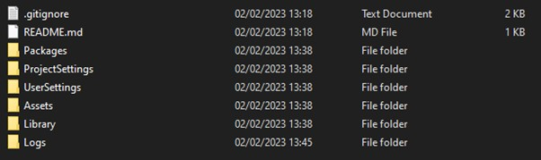

Although Unity files are different in structure, and often larger than, traditional software development projects GitHub can still be used for source control and automation.
In order to set up our GitHub repositories to work using Unity files, we must use the command line and GitHub web GUI in tandem, we can not use GitHub desktop as to ensure this works correctly we need to provide GIT with some specific settings that it needs to follow.
To begin using your Unity files with GitHub you must first create a repository as normal using the GitHub web GUI. However, it is vitally important that when setting up your repository you have set the gitignore template to work with Unity.
If you are unsure of what a .gitignore is you can learn more about them in the previous GitHub tutorials provided, but as a brief overview a .gitignore tells the git service the files that it can ignore when uploading. This results in smaller repositories that only contain files vital to making the project work.
When you have finished creating your repository using the web GUI the next step is to create and empty local repository, create a new folder in your repositories folder especially for your Unity projects and access it using the “cd” command in PowerShell.
You will know that you have successfully accessed the file when your location (the information before the “>” sign) has changed to file path of the folder you created.
When you have accessed the correct folder you can then create a new repository within it by using the “git init” command. PowerShell will tell you if this process has been completed successfully.
After this, and before we fill the folder with our Unity files, we are then going to get access to our created GitHub repository. Depending on your GIT installation we may need to change our main branch name to be “main” to reflect GitHubs branch system.
We can do this by typing the command “git branch -m main” When completed PowerShell will move onto the next line and may not give any information that suggests it worked, this is fine and completely normal.
After this we need to get access to our repository. We use this by using the command “git remote add origin” and then a link to our GitHub repository, so for me this is “git remote add origin https://github.com/JoshGibsonUOH/UnityGitDemonstration”
PowerShell may again not give you any indication that this has worked, which is completely normal.
We then need to clone your online repository (alongside our .gitignore) into the local respository we have just created. We can do this using the command “git pull origin main”
PowerShell will this time update its UI to show you that the local files have been pulled down. You can check this by opening your file and you should be able to see the files from your repository in there.
We then need to copy the Unity files from our project into our repository folder. It is important that you copy the project files and not the project folder.
When you have copied your project files across to your repository it should look like the image below.
Return to the PowerShell window and use the “git status” command to see that your repository can pick up the new files. Your new files should be highlighted in red.
You may notice that the git status is only currently displaying four folders, when 6 have been added to the repository folder – this is our .gitignore working correctly.
Add our files to the repository by using the “git add .” and PowerShell should update showing all of your files being prepared to be added into a repository – you may get some warnings about certain files, this is perfectly normal.

Use the git status command to see your files have been prepared to be added to your repo.
The files should now show as highlighted in green. You may notice they are a lot of them, depending on how many files your Unity project contains.
We are now ready to commit our files to the repository – we can do this by using the command git commit -m “Description of our Commit” so in my case it will say “git commit -m “Added Unity Files”
The UI will then update to show our files being committed to the local repository.
We can then take these files and push them to our repository using the “git push -u origin main” command, that will take our local repo and push it to the main branch.
The UI should update, showing the files have been pushed to your remote repository, and you should be able to access them online using GitHub.
You can now access your Unity project from the repository and edit it as needed going forward, just make sure you have committed and pushed your changes when you have completed work.